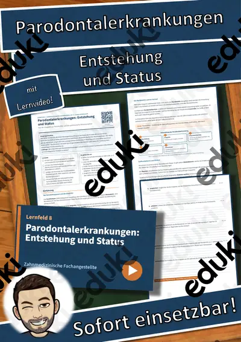
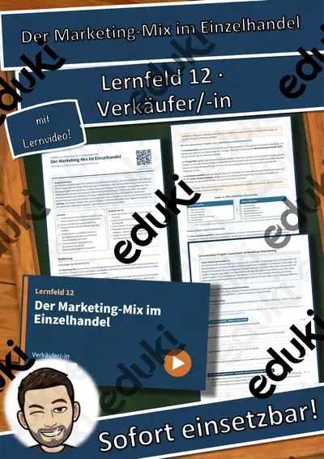
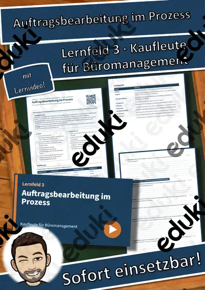
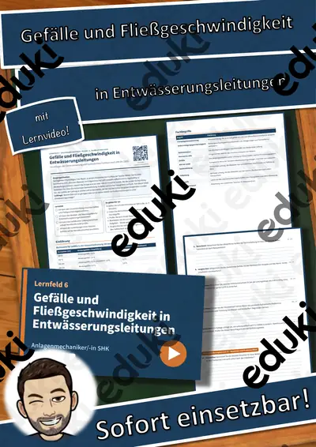
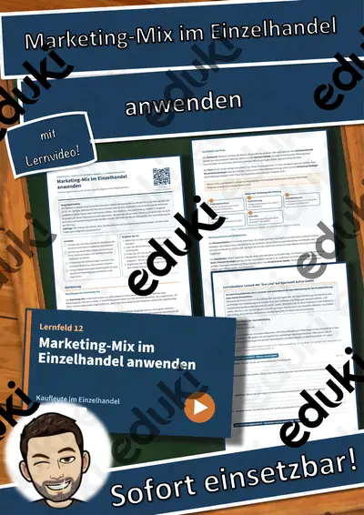

Ich habe, wer hat? Am Meer – Lese-Schleifen – Klasse 1–4

Wortspiele: Sag es nicht! Am Meer – Klasse 2–4

LF 8 Zahnmedizinische Fachangestellte: Parodontalerkrankungen: Entstehung und Status – Übungen, Lösungen + Lernvideo

Himmel und Hölle: Sport – Himmel und Hölle – Klasse 1–4

Lernfeld 12 Verkäufer/-in: Der Marketing-Mix im Einzelhandel – Einführung, Übungen, Lösungen + Lernvideo

Lesen, Malen und Kleben: Im Zoo – Lesen und Malen – Klasse 1–4

Sprechanlässe: Kleidung – Sprechanlässe – Klasse 1–4

Sprechanlässe: Ostern – Sprechanlässe – Klasse 1–4

Ich habe, wer hat? Wetter – Lese-Schleifen – Klasse 1–4

LF 3 Kaufleute für Büromanagement: Auftragsbearbeitung im Prozess – Übungen, Lösungen + Lernvideo

Wortspiele: Sag es nicht! Wetter – Klasse 2–4

Klammerkarten: Sport – Klammerkarten – Klasse 1–4

Wort-Bild-Karten: Wetter – Wort-Bild-Karten – Klasse 1–4

Lesen, Malen und Kleben: Ostern – Lesen und Malen – Klasse 1–4

LF 6 Anlagenmechaniker/-in SHK: Gefälle und Fließgeschwindigkeit in Entwässerungsleitungen – Übungen, Lösungen + Lernvid

Sprechanlässe: Frühling – Sprechanlässe – Klasse 1–4

Ich habe, wer hat? Fahrzeuge – Lese-Schleifen – Klasse 1–4

Wortspiele: Sag es nicht! Fahrzeuge – Klasse 2–4

Lernfeld 7 Elektroniker/-in: Bussysteme in der Gebäudetechnik – Einführung, Übungen, Lösungen + Lernvideo

Wortspiele: Sag es nicht! Familie – Klasse 2–4

Wortgitter-Suchsel: Familie – Wortgitter – Klasse 1–4

Himmel und Hölle: Körper und Sinne – Himmel und Hölle – Klasse 1–4

Klammerkarten: Körper und Sinne – Klammerkarten – Klasse 1–4

Wort-Bild-Karten: Fahrzeuge – Wort-Bild-Karten – Klasse 1–4

Wort-Bild-Karten: Familie – Wort-Bild-Karten – Klasse 1–4

Lesen, Malen und Kleben: Frühling – Lesen und Malen – Klasse 1–4

Sprechanlässe: Sommer – Sprechanlässe – Klasse 1–4

Sprechanlässe: Wetter – Sprechanlässe – Klasse 1–4

LF 12 Kaufleute im Einzelhandel: Marketing-Mix im Einzelhandel anwenden – Übungen, Lösungen + Lernvideo

Memory: Ritter und Burg – Bild-Wort-Spiele – Klasse 1–4

Ich habe, wer hat? Familie – Lese-Schleifen – Klasse 1–4

Wortspiele: Sag es nicht! Im Zoo – Klasse 2–4

Experimentierkartei Sachunterricht: 40 Versuche

Wortgitter-Suchsel: Im Zoo – Wortgitter – Klasse 1–4
LF 6 Kaufleute im Einzelhandel: Angebotsvergleich und Bestellvorgang – Übungen, Lösungen + Lernvideo

Wortgitter-Suchsel: Wilde Tiere – Wortgitter – Klasse 1–4

Himmel und Hölle: Märchen – Himmel und Hölle – Klasse 1–4

Wort-Bild-Karten: Im Zoo – Wort-Bild-Karten – Klasse 1–4

Lesen, Malen und Kleben: Sommer – Lesen und Malen – Klasse 1–4

Sprechanlässe: Bienen – Sprechanlässe – Klasse 1–4

Domino: Ritter und Burg – Bild-Wort-Spiele – Klasse 1–4

Ich habe, wer hat? Im Zoo – Lese-Schleifen – Klasse 1–4

Wortspiele: Sag es nicht! Wilde Tiere – Klasse 2–4

Klammerkarten: Märchen – Klammerkarten – Klasse 1–4

Wort-Bild-Karten: Wilde Tiere – Wort-Bild-Karten – Klasse 1–4

Lesen, Malen und Kleben: Bienen – Lesen und Malen – Klasse 1–4

Sprechanlässe: Kochen und Backen – Sprechanlässe – Klasse 1–4

Ich habe, wer hat? Wilde Tiere – Lese-Schleifen – Klasse 1–4
Keine Materialien gefunden – versuch einen anderen Suchbegriff oder Filter.